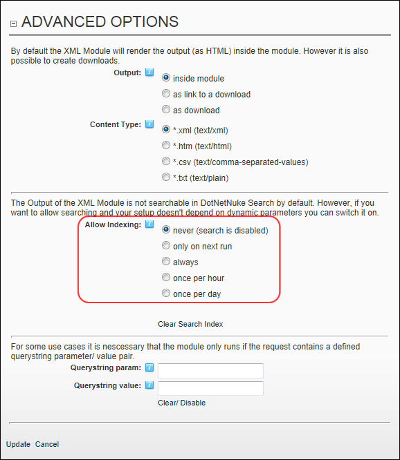

Enabling/Disabling XML Search Indexing
How to enable or disable the DNN Search for the XML/XSL module. Note: Parameters must not be set to allow the module to be included in DNN search.
- Select
 Edit Module Configuration from the XML/XSL module actions menu. This opens the XML Module Configuration page.
Edit Module Configuration from the XML/XSL module actions menu. This opens the XML Module Configuration page.
- Maximize
 the Advanced Options section.
the Advanced Options section.
- At Allow Indexing, select one of the following search options to set how often this module is updated in search:
- Never (search is disabled): Select to disable search. Skip to Step 5.
- Only on next run: Select to update search results the next time a search is run.
- Always: Select to update search results each time a search is run.
- Once per hour: Select to update search results one time per hour.
- Once per day: Select to update search results one time per day.

- Optional. Click the Clear Search Index link if you want to clear cached search information. This will run a new search the next time a search is made.
- Click the Update link.